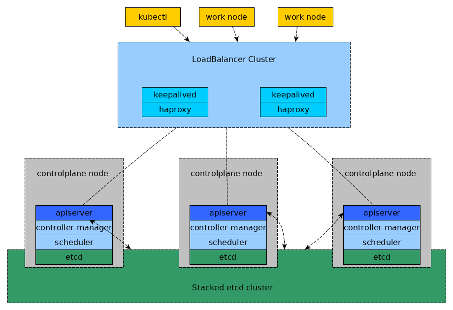

部署 HA 环境
部署高可用负载均衡集群
在部署生产可用的 kubernetes 集群之前，需要先部署 LoadBalancer 环境，这里使用 keepalived + haproxy 的方式实现负载均衡和高可用。
环境说明
单独拿两个节点部署 keepalived 和 haproxy 作为后端 kubernetes 控制平面的负载均衡器，拓扑结构如下:

两个节点上面分别部署 keepalived 和 haproxy 组成负载均衡集群，haproxy 的 backend 为后端的 kubernetes control plane node，vip(虚ip) 在这两个节点之间漂移形成高可用。
另外 云联壹云 服务使用 Mariadb，如果没有专门的数据库集群，可以单独拿两个节点部署 Mariadb 高可用。参考 部署 DB HA 环境 。
部署
keepalived 的主要作用是为 haproxy 提供 vip，在2个 haproxy 实例之间提供主备，降低当其中一个haproxy失效的时对服务的影响。
部署配置 keepalived
设置相关的环境变量，根据不同的环境自行配置。
# keepalived vip 地址
export K8SHA_VIP=10.168.222.18
# keepalived auth toke
export K8SHA_KA_AUTH=412f7dc3bfed32194d1600c483e10ad1d
# keepalived network interface
export K8SHA_NETIF=eth0
设置 sysctl 选项
$ cat <<EOF >>/etc/sysctl.conf
net.ipv4.ip_forward = 1
net.ipv4.ip_nonlocal_bind = 1
EOF
$ sysctl -p
安装 keepalived
$ yum install -y keepalived
添加配置
$ cat <<EOF >/etc/keepalived/keepalived.conf
! Configuration File for keepalived
global_defs {
router_id LVS_DEVEL
}
vrrp_script check_haproxy {
script "pidof haproxy"
interval 3
weight -2
fall 10
rise 2
}
vrrp_instance VI_1 {
state MASTER
interface $K8SHA_NETIF
virtual_router_id 51
priority 250
advert_int 1
authentication {
auth_type PASS
auth_pass $K8SHA_KA_AUTH
}
virtual_ipaddress {
$K8SHA_VIP
}
track_script {
check_haproxy
}
}
EOF
启动 keepalived
$ systemctl enable --now keepalived
$ ip addr show $K8SHA_NETIF
2: eth0: <BROADCAST,MULTICAST,UP,LOWER_UP> mtu 1500 qdisc mq state UP qlen 1000
link/ether 00:22:ff:95:87:f7 brd ff:ff:ff:ff:ff:ff
inet 10.168.222.189/24 brd 10.168.222.255 scope global eth0
valid_lft forever preferred_lft forever
inet 10.168.222.18/32 scope global eth0
valid_lft forever preferred_lft forever
inet6 fe80::222:ffff:fe95:87f7/64 scope link
valid_lft forever preferred_lft forever
部署配置 haproxy
此处的 haproxy 为 apiserver 提供反向代理，haproxy 将所有请求轮询转发到每个master节点上。
系统配置
export K8S_MASTER0=10.168.222.218
export K8S_MASTER1=10.168.222.197
export K8S_MASTER2=10.168.222.207
安装 haproxy
$ yum install -y haproxy
配置 haproxy
$ cat <<EOF >/etc/haproxy/haproxy.cfg
#---------------------------------------------------------------------
# Global settings
#---------------------------------------------------------------------
global
# to have these messages end up in /var/log/haproxy.log you will
# need to:
#
# 1) configure syslog to accept network log events. This is done
# by adding the '-r' option to the SYSLOGD_OPTIONS in
# /etc/sysconfig/syslog
#
# 2) configure local2 events to go to the /var/log/haproxy.log
# file. A line like the following can be added to
# /etc/sysconfig/syslog
#
# local2.* /var/log/haproxy.log
#
log 127.0.0.1 local2
chroot /var/lib/haproxy
pidfile /var/run/haproxy.pid
maxconn 4000
user haproxy
group haproxy
daemon
# turn on stats unix socket
stats socket /var/lib/haproxy/stats
#---------------------------------------------------------------------
# common defaults that all the 'listen' and 'backend' sections will
# use if not designated in their block
#---------------------------------------------------------------------
defaults
mode http
log global
option httplog
option dontlognull
option http-server-close
option forwardfor except 127.0.0.0/8
option redispatch
retries 3
timeout http-request 10s
timeout queue 1m
timeout connect 10s
timeout client 1m
timeout server 1m
timeout http-keep-alive 10s
timeout check 10s
maxconn 3000
#---------------------------------------------------------------------
# kubernetes apiserver frontend which proxys to the backends
#---------------------------------------------------------------------
frontend kubernetes-apiserver
mode tcp
bind *:6443
option tcplog
default_backend kubernetes-apiserver
#---------------------------------------------------------------------
# round robin balancing between the various backends
#---------------------------------------------------------------------
backend kubernetes-apiserver
mode tcp
balance roundrobin
server master-0 $K8S_MASTER0:6443 check
server master-1 $K8S_MASTER1:6443 check
server master-2 $K8S_MASTER2:6443 check
#---------------------------------------------------------------------
# collection haproxy statistics message
#---------------------------------------------------------------------
listen stats
bind *:1080
stats auth admin:awesomePassword
stats refresh 5s
stats realm HAProxy\ Statistics
stats uri /admin?stats
EOF
启动并检测服务
$ systemctl enable haproxy.service --now
$ systemctl status haproxy.service
$ netstat -tulnp | egrep '6443|1080'
tcp 0 0 0.0.0.0:6443 0.0.0.0:* LISTEN 10033/haproxy
tcp 0 0 0.0.0.0:1080 0.0.0.0:* LISTEN 10033/haproxy
部署 kubernetes 集群
参考 部署集群 。
Feedback
Was this page helpful?
Glad to hear it! Please tell us how we can improve.
Sorry to hear that. Please tell us how we can improve.
最后修改 24.03.2021: fix: internal content link (db5a8a9)